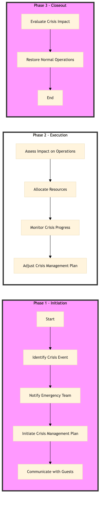

| Role | Steps |
|---|---|
| Executive Housekeeper | 1.1 3.1 |
| Front Desk Agent | 1.2 1.4 |
| Property Manager | 1.3 2.2 2.4 3.2 |
| Revenue Manager | 2.1 3.1 |
| Step | Name | Role | System | Input | Output | KPI | Dec? | Exc? | Pain Point / Risk |
|---|---|---|---|---|---|---|---|---|---|
| 1.1 | Identify Crisis Event | Executive Housekeeper | Oracle OPERA Cloud | Crisis event report | Crisis event log | Less than 5 minutes | Y | N | Delayed identification can lead to prolonged impact. |
| 1.2 | Notify Emergency Team | Front Desk Agent | Oracle OPERA Cloud | Crisis event log | Emergency team notification | Less than 3 minutes | N | Y | Miscommunication can result in inadequate response. |
| 1.3 | Initiate Crisis Management Plan | Property Manager | Oracle OPERA Cloud, IDeaS G3 RMS | Crisis event notification | Crisis management plan activation | Less than 2 minutes | N | Y | Failure to activate the plan can lead to chaos. |
| 1.4 | Communicate with Guests | Front Desk Agent | Oracle OPERA Cloud, Marriott Bonvoy CRM | Crisis management plan activation | Guest communication log | Less than 10 minutes | N | Y | Inaccurate or delayed communication can cause guest dissatisfaction. |
| 2.1 | Assess Impact on Operations | Revenue Manager | Oracle OPERA Cloud, SynXis CRS | Crisis event log | Impact assessment report | Less than 15 minutes | Y | N | Overlooking critical operational impacts can lead to financial losses. |
| 2.2 | Allocate Resources | Property Manager | Oracle OPERA Cloud, Birchstreet Procurement | Impact assessment report | Resource allocation plan | Less than 10 minutes | N | Y | Inadequate resource allocation can exacerbate the crisis. |
| 2.3 | Monitor Crisis Progress | Executive Housekeeper | Oracle OPERA Cloud, Knowcross HotSOS | Resource allocation plan | Crisis progress report | Every 15 minutes | Y | N | Lack of continuous monitoring can lead to missed opportunities for improvement. |
| 2.4 | Adjust Crisis Management Plan | Property Manager | Oracle OPERA Cloud, IDeaS G3 RMS | Crisis progress report | Updated crisis management plan | Less than 5 minutes | N | Y | Rigid adherence to the original plan can prevent effective resolution. |
| 3.1 | Evaluate Crisis Impact | Revenue Manager | Oracle OPERA Cloud, SynXis CRS | Crisis progress report | Impact evaluation report | Less than 30 minutes | Y | N | Inaccurate impact evaluation can lead to improper recovery strategies. |
| 3.2 | Restore Normal Operations | Property Manager | Oracle OPERA Cloud, IDeaS G3 RMS | Impact evaluation report | Normal operations restoration plan | Less than 1 hour | N | Y | Prolonged recovery can result in significant financial and reputational damage. |
The SC-CL-07 process ensures a Marriott full-service hotel can effectively manage crises and maintain business continuity by following predefined protocols and leveraging key systems.